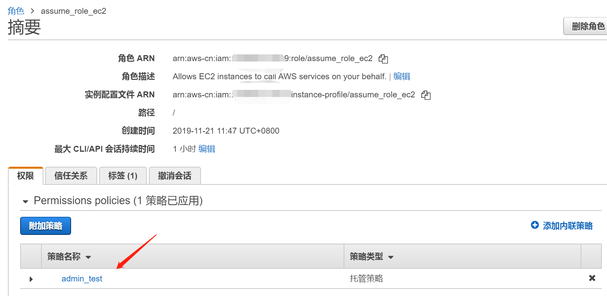
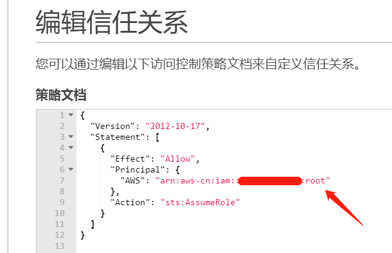
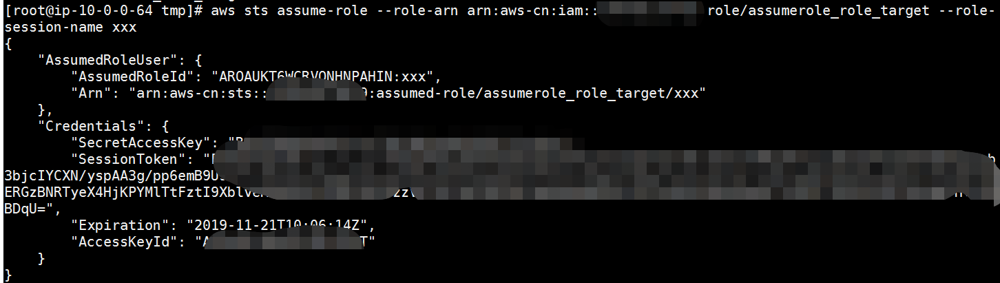
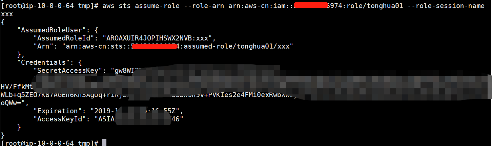
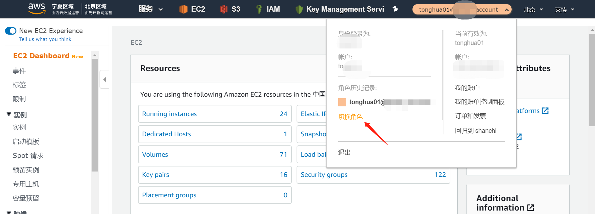

聊一聊AssumeRole和Trust Relationship
0x00 前言
AWS在IAM服务提供了一个Role的功能，Role的话就是可以扩大自己的权限，比如说一个user可以临时assume一个role，那这个user就具备这个role的权限了。或者跨账号访问的时候也可以用这个role。再比如说我做SSO的时候，也是用role实现的。
那和role相关的最小action都有哪些呢？这一节我们就来聊一聊这块。
0x01 IAM Role 权限的组成部分
我这里创建两个role（一个role A，一个role B），role A是为了让EC2实例附加，role B是为了让role A assume。
Role B的Policy具有管理员权限（当然我们这节也不用关系它），重点看看role B的信任关系，和role A的Policy。
IAM Role 的权限通常由两部分组成，一个是Policy，一个是Trust Relationship（信任关系）。Policy就是我这个role能干多大的事。信任关系就是说，谁能assume这个role，这里的“谁”，可能是指user、role等等。其实我现在jio着这个信任关系，倒是跟S3 Bucket Policy还是有几分相像的。
那就先看看这个role还有信任关系啥的吧：1
2
3
4
5
6
7
8
9
10
11
12
13
14
15
16
17
18
19
20
21
22
23
24
25
26
27
28
29
30
31[root@ip-10-0-0-64 tmp]# aws iam get-role --role-name assumerole_role_target
{
"Role": {
"Description": "Allows EC2 instances to call AWS services on your behalf.",
"AssumeRolePolicyDocument": {
"Version": "2012-10-17",
"Statement": [
{
"Action": "sts:AssumeRole",
"Effect": "Allow",
"Principal": {
"AWS": "arn:aws-cn:iam::123456789012:role/assume_role_ec2"
}
}
]
},
"MaxSessionDuration": 3600,
"RoleId": "AROAUKT6WCRVQNHNPAHIN",
"CreateDate": "2019-11-21T03:46:08Z",
"Tags": [
{
"Value": "test",
"Key": "Name"
}
],
"RoleName": "assumerole_role_target",
"Path": "/",
"Arn": "arn:aws-cn:iam::123456789012:role/assumerole_role_target"
}
}
[root@ip-10-0-0-64 tmp]#
再来看看role A的Policy：1
2
3
4
5[root@ip-10-0-0-64 tmp]# aws iam list-role-policies --role-name assume_role_ec2
{
"PolicyNames": []
}
[root@ip-10-0-0-64 tmp]#
为空时因为我们没有内联策略，然后我现在给他附加了一个托管策略（admin_test），不过策略的内容是空的。

1 | [root@ip-10-0-0-64 tmp]# aws iam get-policy --policy-arn arn:aws-cn:iam::123456789012:policy/admin_test |
可以看到我现在这个role现在附加的Policy只有个ec2:DescribeInstances权限，对IAM相关的权限肯定没啥影响。1
2
3
4
5
6
7
8
9
10
11
12
13
14
15
16
17
18
19
20[root@ip-10-0-0-64 tmp]# aws iam get-policy-version --policy-arn arn:aws-cn:iam::123456789012:policy/admin_test --version-id v4
{
"PolicyVersion": {
"CreateDate": "2019-11-21T08:45:11Z",
"VersionId": "v4",
"Document": {
"Version": "2012-10-17",
"Statement": [
{
"Action": "ec2:DescribeInstances",
"Resource": "*",
"Effect": "Allow",
"Sid": "VisualEditor0"
}
]
},
"IsDefaultVersion": true
}
}
[root@ip-10-0-0-64 tmp]#
0x02 测试看看
然后我现在做一个assume操作试试：1
2
3
4
5
6
7
8
9
10
11
12
13
14
15
16[root@ip-10-0-0-64 tmp]# aws sts assume-role --role-arn arn:aws-cn:iam::123456789012:role/assumerole_role_target --role-session-name xxx
{
"AssumedRoleUser": {
"AssumedRoleId": "AROAUKT6WCRVQNHNPAHIN:xxx",
"Arn": "arn:aws-cn:sts::123456789012:assumed-role/assumerole_role_target/xxx"
},
"Credentials": {
"SecretAccessKey": "xx",
"SessionToken": "xx",
"Expiration": "2019-11-21T09:49:55Z",
"AccessKeyId": "xx"
}
}
[root@ip-10-0-0-64 tmp]# date
Thu Nov 21 08:50:35 UTC 2019
[root@ip-10-0-0-64 tmp]#
可以看到已经成了。
那我再来修改一下role B的信任关系，修改成当前账号的root arn试试。

然后在执行assume role操作，可以看到这个操作被拒绝了：1
2
3
4[root@ip-10-0-0-64 tmp]# aws sts assume-role --role-arn arn:aws-cn:iam::123456789012:role/assumerole_role_target --role-session-name xxx
An error occurred (AccessDenied) when calling the AssumeRole operation: User: arn:aws-cn:sts::123456789012:assumed-role/assume_role_ec2/i-111ecda157b494afe is not authorized to perform: sts:AssumeRole on resource: arn:aws-cn:iam::123456789012:role/assumerole_role_target
[root@ip-10-0-0-64 tmp]#
那这是因为啥呢，起初我刚看到这个现象的时候一脸懵逼啊，心想我root账号都有权限了，凭啥role就没权限搞呢？
后来想想对标一下S3 Bucket Policy这个事就明了了，我只是把权限给root了，但是作为root账号我还要把权限委派下去啊，我需要给role A一个sts:AssumeRole的权限。
再来试试：

可以看到已经成功了哈。
0x03 跨账号能这么玩吗？

嗯，试了一下，跨账号这么晚也没啥毛病。
当然比较常见的使用方法，除了使用cli，在控制台中也可以这么操作：

0x04 总结
- 同一账号下，role B的信任关系中有role A的ARN就够了
- 跨账号的场景下，role C（另一个账号的role，信任关系中要包含role A的ARN，role A也要有assume role的权限才能玩）